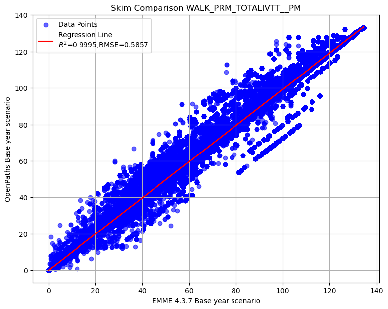

Intercept: 0.0138
Slope: 0.9951
R² Score: 0.9988
RMSE: 0.9167
Scatterplot comparison of PM Peak total actual in-vehicle travel time by walk premium
Intercept: 0.0138
Slope: 0.9951
R² Score: 0.9988
RMSE: 0.9167
Scatterplot comparison of PM Peak actual in-vehicle travel time on LRT mode by walk premium
Intercept: 0.0040
Slope: 0.9952
R² Score: 0.9975
RMSE: 0.6113
Scatterplot comparison of PM Peak actual in-vehicle travel time on commuter rail mode by walk premium
Intercept: 0.0018
Slope: 0.9857
R² Score: 0.9895
RMSE: 0.8594
Scatterplot comparison of PM Peak actual in-vehicle travel time on express bus mode by walk premium
Intercept: 0.0127
Slope: 0.9755
R² Score: 0.9896
RMSE: 0.6671
Scatterplot comparison of PM Peak actual in-vehicle travel time on BRT mode by walk premium
Intercept: 0.0357
Slope: 0.9950
R² Score: 0.9920
RMSE: 1.3270Intercept: 0.0648
Slope: 0.9924
R² Score: 0.9999
RMSE: 0.7963Intercept: 0.1343
Slope: 0.9922
R² Score: 0.9965
RMSE: 2.8342
To display the top 5 rows of skim comparison (sort by WALK_PRM_TOTALIVTT__PM)
| Origin | Destination | WALK_PRM_TOTALIVTT__PM | WALK_PRM_LRTIVTT__PM | WALK_PRM_CMRIVTT__PM | WALK_PRM_EXPIVTT__PM | WALK_PRM_BRTIVTT__PM | WALK_LOC_TOTALIVTT__PM | WALK_MIX_TOTALIVTT__PM | WALK_PRM_XFERS__PM | WALK_LOC_XFERS__PM | WALK_MIX_XFERS__PM |
|---|---|---|---|---|---|---|---|---|---|---|---|
| 51 | 2191 | 36.66 | 42.12 | -52.63 | 8.86 | 38.31 | -1.1 | -0.31 | 0 | 0 | 0 |
| 51 | 2226 | 36.66 | 42.12 | -52.63 | 8.86 | 38.31 | -1.1 | -0.31 | 0 | 0 | 0 |
| 1835 | 2849 | 34.18 | 0 | 0 | 71.99 | -37.81 | 0 | 0 | 0.28 | 0 | 0 |
| 1835 | 2896 | 34.18 | 0 | 0 | 71.99 | -37.81 | 0 | 0 | 0.28 | 0 | 0 |
| 1835 | 3093 | 34.18 | 0 | 0 | 71.99 | -37.81 | 0 | 0 | 0.28 | 0 | 0 |
Below is the summary of select matrices difference in transit PM skim
| WALK_PRM_TOTALIVTT__PM | WALK_PRM_LRTIVTT__PM | WALK_PRM_CMRIVTT__PM | WALK_PRM_EXPIVTT__PM | WALK_PRM_BRTIVTT__PM | WALK_LOC_TOTALIVTT__PM | WALK_MIX_TOTALIVTT__PM | WALK_PRM_XFERS__PM | WALK_LOC_XFERS__PM | WALK_MIX_XFERS__PM | |
|---|---|---|---|---|---|---|---|---|---|---|
| count | 24,472,809.00 | 24,472,809.00 | 24,472,809.00 | 24,472,809.00 | 24,472,809.00 | 24,472,809.00 | 24,472,809.00 | 24,472,809.00 | 24,472,809.00 | 24,472,809.00 |
| mean | -0.05 | -0.02 | -0.02 | -0.02 | 0.01 | -0.48 | -0.16 | 0.01 | -0.00 | 0.00 |
| std | 0.93 | 0.61 | 0.87 | 0.69 | 1.33 | 0.82 | 2.53 | 0.09 | 0.03 | 0.06 |
| min | -27.70 | -66.45 | -59.88 | -60.93 | -65.62 | -60.45 | -135.80 | -2.00 | -2.06 | -3.10 |
| 25% | 0.00 | 0.00 | 0.00 | 0.00 | 0.00 | -1.07 | -0.20 | 0.00 | 0.00 | 0.00 |
| 50% | 0.00 | 0.00 | 0.00 | 0.00 | 0.00 | -0.12 | 0.00 | 0.00 | 0.00 | 0.00 |
| 75% | 0.00 | 0.00 | 0.00 | 0.00 | 0.00 | 0.00 | 0.00 | 0.00 | 0.00 | 0.00 |
| max | 36.66 | 49.24 | 59.22 | 71.99 | 74.46 | 49.35 | 164.89 | 2.68 | 3.43 | 3.50 |
Let’s check the records with difference in WALK_PRM_LRTIVTT__PM greater than 45
| Origin | Destination | WALK_PRM_TOTALIVTT__PM | WALK_PRM_LRTIVTT__PM | WALK_PRM_CMRIVTT__PM | WALK_PRM_EXPIVTT__PM | WALK_PRM_BRTIVTT__PM | WALK_LOC_TOTALIVTT__PM | WALK_MIX_TOTALIVTT__PM | WALK_PRM_XFERS__PM | WALK_LOC_XFERS__PM | WALK_MIX_XFERS__PM |
|---|---|---|---|---|---|---|---|---|---|---|---|
| 50 | 2764 | 11.61 | 49.24 | -52.63 | -38.89 | 53.88 | -1.41 | 0 | 0 | 0 | 0 |
| 51 | 2479 | 23.04 | 49.24 | -59.22 | 0 | 33.01 | -1.45 | 0 | 0 | 0 | 0 |
| 70 | 2762 | 14.91 | 49.24 | -49.33 | -38.89 | 53.88 | -1.4 | 0 | 0 | 0 | 0 |
| 2391 | 57 | 24.19 | 49.24 | -53.29 | -26.31 | 54.54 | -1.09 | 0 | 0 | 0 | 0 |
| 2395 | 53 | 17.79 | 45.96 | -55.89 | 0 | 27.72 | -1.21 | 0 | -1.5 | 0 | 0 |
| 2571 | 53 | 25.13 | 49.24 | -59.88 | 0 | 35.77 | -1.14 | 0 | 0 | 0 | 0 |
| 2601 | 53 | 25.13 | 49.24 | -59.88 | 0 | 35.77 | -1.33 | 0 | 0 | 0 | 0 |
| 2616 | 53 | 25.13 | 49.24 | -59.88 | 0 | 35.77 | -1.14 | 0 | 0 | 0 | 0 |
| 2637 | 53 | 25.13 | 49.24 | -59.88 | 0 | 35.77 | -1.14 | 0 | 0 | 0 | 0 |
| 2640 | 53 | 25.13 | 49.24 | -59.88 | 0 | 35.77 | -1.14 | 0 | 0 | 0 | 0 |
| 2662 | 53 | 25.13 | 49.24 | -59.88 | 0 | 35.77 | -1.38 | 0 | 0 | 0 | 0 |
| 2686 | 53 | 24.12 | 49.24 | -59.88 | 0 | 34.76 | -1.33 | 0 | 0 | 0 | 0 |
| 2761 | 53 | 25.13 | 49.24 | -59.88 | 0 | 35.77 | -1.38 | 0 | 0 | 0 | 0 |
| 2762 | 53 | 25.13 | 49.24 | -59.88 | 0 | 35.77 | -1.24 | 0 | 0 | 0 | 0 |
| 2764 | 53 | 25.13 | 49.24 | -59.88 | 0 | 35.77 | -1.14 | 0 | 0 | 0 | 0 |
| 2765 | 53 | 25.13 | 49.24 | -59.88 | 0 | 35.77 | -1.24 | 0 | 0 | 0 | 0 |
| 2766 | 53 | 25.13 | 49.24 | -59.88 | 0 | 35.77 | -1.33 | 0 | 0 | 0 | 0 |
| 2768 | 53 | 24.12 | 49.24 | -59.88 | 0 | 34.76 | -1.33 | 0 | 0 | 0 | 0 |
| 2878 | 57 | 14.91 | 45.96 | -55.89 | 0 | 24.84 | -1.34 | 0 | -0.5 | 0 | 0 |
| 2890 | 57 | 14.91 | 45.96 | -55.89 | 0 | 24.84 | -1.34 | 0 | -0.5 | 0 | 0 |
| 2903 | 57 | 14.91 | 45.96 | -55.89 | 0 | 24.84 | -1.34 | 0 | -0.5 | 0 | 0 |
| 2972 | 57 | 14.91 | 45.96 | -55.89 | 0 | 24.84 | -1.36 | 0 | -0.5 | 0 | 0 |
| 2990 | 57 | 14.91 | 45.96 | -55.89 | 0 | 24.84 | -1.36 | 0 | -0.5 | 0 | 0 |
| 3045 | 57 | 14.9 | 45.96 | -55.89 | 0 | 24.82 | -1.36 | 0 | -0.5 | 0 | 0 |
| 3049 | 57 | 14.9 | 45.96 | -55.89 | 0 | 24.82 | -1.36 | 0 | -0.5 | 0 | 0 |
| 3144 | 57 | 14.9 | 45.96 | -55.89 | 0 | 24.82 | -1.34 | 0 | -0.5 | 0 | 0 |
Let’s check the records with difference in WALK_PRM_LRTIVTT__PM less than -60
| Origin | Destination | WALK_PRM_TOTALIVTT__PM | WALK_PRM_LRTIVTT__PM | WALK_PRM_CMRIVTT__PM | WALK_PRM_EXPIVTT__PM | WALK_PRM_BRTIVTT__PM | WALK_LOC_TOTALIVTT__PM | WALK_MIX_TOTALIVTT__PM | WALK_PRM_XFERS__PM | WALK_LOC_XFERS__PM | WALK_MIX_XFERS__PM |
|---|---|---|---|---|---|---|---|---|---|---|---|
| 1244 | 3240 | -5.67 | -60.27 | 0 | 54.6 | 0 | -1.63 | 0 | -1 | 0 | 0 |
| 1255 | 3240 | -6.77 | -61.38 | 0 | 54.6 | 0 | -1.62 | 0 | -1 | 0 | 0 |
| 1428 | 3575 | -10.57 | -66.45 | 0 | 55.88 | 0 | -1.43 | -1.3 | 0 | 0 | 0 |